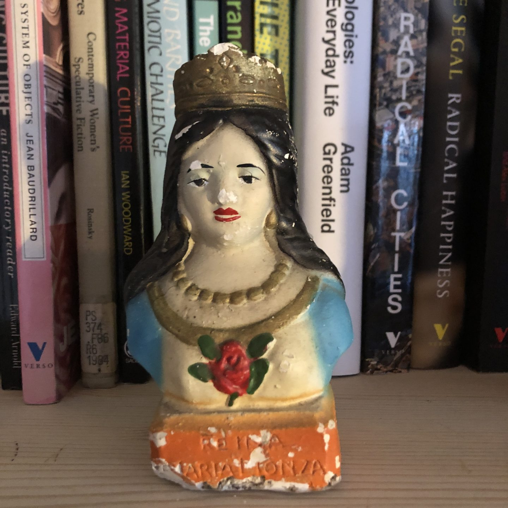
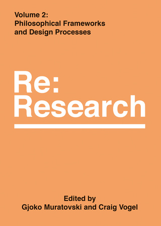

DBOX Radio · Exploradores de Futuros
Malex Salamanques
Design · Culture · Semiotics · Futures.
Brighton / Barcelona / Caracas
About
I'm a British-Venezuelan designer, semiotician and strategist. I work with the meaning systems underneath the surface of things and translate them into strategy, design and futures for brands and organisations.
I've been doing this for over twenty years, across Asia, the Middle East, Latam, Europe and the US.
Currently I'm a Director at Space Doctors, working across Culture and Semiotics, Speculative Design, and Creative Strategy.
I'm a methodologist as much as a practitioner. Recoding, a name I coined to describe a methodology I developed for taking semiotic and cultural analysis forward into strategic creative direction and execution, was created during my MA research, many moons ago, and has since become the preferred term to describe this operation in the field of commercial semiotics. During my time at Space Doctors, I've led the consolidation of the Speculative Strategy offer, running the first pilot projects on culturally informed Speculative Scenarios and trialing approaches including rapid prototyping and backcasting. Over the years I've also been part of building out Sensory Semiotics and Rituals Design as practice areas.
Projects I've worked on span across categories, including offering a Recoding platform to inform the creative strategy behind the global re-stage of a premium ice cream brand, the colour and spatial language of AR/VR/MR platforms, Gen Z colour design strategy for mobile phones, informing UX and product design for a Tea Machine, Latam Futures Scenarios for a soft drinks global brand, and cultural research for charities like WaterAid, Macmillan and Greenpeace.
At a break from Space Doctors I founded Mundano Estudio in Colombia, a design, branding and futures consultancy operating across Latam. Two of the brands Mundano created made it onto the list of Colombia's most loved brands in a period of five years. The work was recognised at Laus, the Latin American Design Awards and the Bienal Iberoamericana de Diseño.
In parallel I run Futureña, an independent observatory exploring futures narratives emerging from Latam.
I tend to create bodies of knowledge inadvertently: this site is an attempt to make them visible and attainable.
Selected Work
Current focus
Futureña
My personal and ongoing observatory at the intersection of semiotics and critical-speculative design, focused on Latin America. A space to track cultural signals and prototype the emerging imaginaries being authored from the region.
Read more at futureña.com →The 7 Myths of Big Meat's Marketing
Spain cultural analysis for Greenpeace's investigation into the marketing strategies of the industrial meat sector. In collaboration with Stef Silva.
Read the report →Writing
-
2025

-
CHRONOPOLITICS OF DISOBEDIENCE: INDIGENOUS RHYTHMS AND THE PRACTICE OF ACTIVE HOPE In REBELLION, School of Critical Design2025
This essay reframes rebellion as a question of time. While resistance is usually imagined as outward gesture — protest in the streets, refusal of policy — I want to argue for a deeper disobedience aimed at the temporal architecture that makes collapse feel inevitable in the first place. Following Walter Mignolo's account of modernity as a temporal regime, I trace how Christian eschatology bequeathed a linear arc that the Enlightenment secularized into progress, capitalism scaled into speed, and accelerationism intensified into a wager on implosion. Against this single line, I turn to the plural temporalities of Indigenous Latin American thought: the Aymara placing of the past in front of the body, the Quechua pacha, the Kichwa Pachakuti as rupture-within-rhythm, Silvia Rivera Cusicanqui's spiralled history, Marisol de la Cadena's co-presence. Joanna Macy's active hope offers connective tissue: hope as participation rather than expectation. Rebellion becomes the act of reimagining time.
Buy the zine → -
2021

-
2017

Talks & Interviews
DBOX Radio · Exploradores de Futuros
Transforming Worlds with Carola Verschoor
Women Who Futures, with Gemma Jones
Contact
For collaborations, commissions or conversation:
PR
- Opinion: Why the key to great creative is great creative strategy With Cato Hunt in Marketing Beat 2024
- Type trends for 2024 every designer needs to know about By Tom May in Creative Boom 2023
- Challenges facing women in the 2022 design industry, and how to overcome them By Katy Cowan in Creative Boom 2022
- How 2022 is shaping up for creativity with fascinating insight from industry leaders By Katy Cowan in Creative Boom 2021